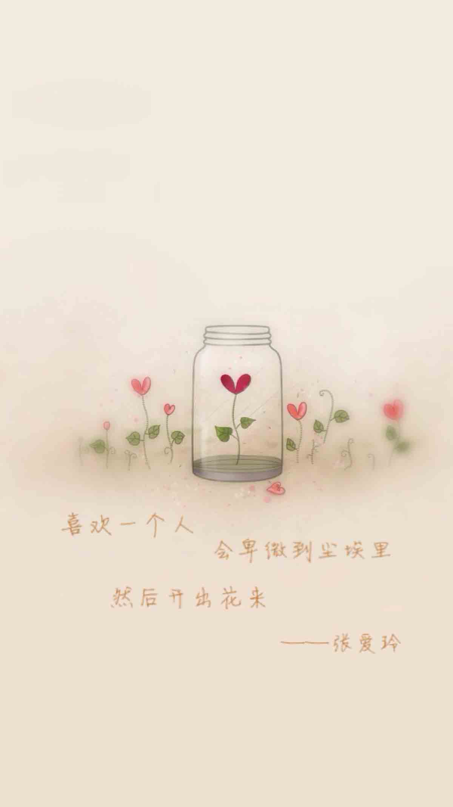

张爱玲语录
作者：张爱玲
摘抄人：吴泽发 时间：2015.3
（一）因为爱过，所以慈悲；因为懂得，所以宽容。
（二）如果你认识从前的我，那么你就会原谅现在的我。
（三）于千万人之中遇见你所要遇见的人，于千万年之中，时间的无涯的荒野里，没有早一步，也没有晚一步，刚巧赶上了，那也没有别的话可说，惟有轻轻地问一声：“噢，你也在这里吗？”
（四）也许每一个男子全都有过这样的两个女人，至少两个． 娶了红玫瑰，久而久之，红的变了墙上的一抹蚊子血，白的还是“床前明月光”； 娶了白玫瑰，白的便是衣服上的一粒饭粘子，红的却是心口上的一颗朱砂痣。
（五）你还不来，我怎敢老去。
（六）见了他，她变得很低很低，低到尘埃里。但她心里是欢喜的，从尘埃里开出花来。
（七）我要你知道,在这个世界上总有一个人是等着你的,不管在什么时候,不管在什么地方,反正你知道,总有这么个人。
（八）笑，全世界便与你同声笑，哭，你便独自哭。
（九）说好永远的，不知怎么就散了。最后自己想来想去，竟然也搞不清楚当初是什么原因把彼此分开的。然后，你忽然醒悟，感情原来是这么脆弱的。经得起风雨，却经不起平凡......
（十）若只是喜欢，何必夸张成爱。若只是多心，何苦虚张成情。若只是微凉，何必虚夸成殇。 若只是微苦，何必虚说成殇。若只是多情，何苦句句是恋。若只是心痛，何必说成心碎。若只是神伤，何必虚说成怨。
（十一）爱上一个人,心会一直低,低到泥土里,在土里开出花来,如此卑微却又如此欣喜。
（十二）人的一生中有大大小小的等待,人渐渐忘记了自己等待的是什么。
（十三）“不管你的条件有多差，总会有个人在爱你。不管你的条件有多好 ，也总有个人不爱你”——对不爱你的人，要懂得放手，对爱你的人，要懂得感激，不需过于自卑，无谓过于自信。
（十四）生命是一朵千瓣莲花，我拒绝了绽放的同时，我也拒绝了枯萎和零落。
（十五）生命中是否会有一个人，当你第一眼看到他时，你已经知道，就是他了。这时，你微笑的眼睛望着他，笃定地说：“你哪里都别想再去了！”
（十六）童年的一天一天，温暖而迟缓，正像老棉鞋里面，粉红绒里子上晒着的阳光。
（十七）我一直喜欢下午的阳光，它让我相信这个世界任何事情都会有转机。
（十八）一个知己就像一面镜子，反应出我们天性中最优美的一部分。
（十九）回忆这东西若是有气味的话，那就是樟脑的香，甜而稳妥，像记得分明的块乐，甜而怅惘，像忘却了的忧愁。
（二十）当我爱你时，你的心在沉睡；当你爱我时，我的心已冰封。
（二一）爱情还没有来到，日子是无忧无虑的，最痛苦的，也不过是测验和考试。当时觉得很大压力，后来回望，不过是多么的微小。有些人注定是等待别人的，有些人是注定被人等的。缘起缘灭，缘浓缘淡，不是我们能够控制的。我们能做到的，是在因缘际会的时侯好好的珍惜那短暂的时光。
（二三）毕竟日子是自己在过，不是为了别人在活。
（二四）每一只蝴蝶都是从前一朵花的精魂，是花的前世来会见此生。
（二五）一个人一生中会死三次，第一次是脑死亡，意味着身体死了，第二次是葬礼，意味着在社会中死了，第三次是遗忘，这世上再也没有人想起你了，那就是完完全全地死透了。